Grids
概述
一般来说设计工具中都有网格、参考线等工具来辅助一些对齐，排布功能，如 photoshop 和 sketch 等。
在没有 CSS 对应的网格功能之前，一般会使用 float 或 flexbox 等技术来模拟这种网格系统，比如960s，bootstrap 的网格系统。虽然模拟出来的网格系统在一定程度上可以一些解决问题，但是在面临一些如 Win10 UI 这种还是有点力所不及，如下图的布局：
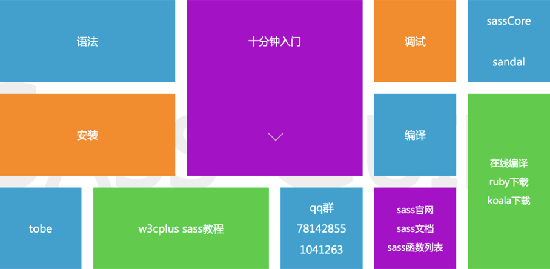
既然有了使用场景的需求，肯定就会有新的标准技术出现，这就是这里要说的 CSS Grid Layout。
同 flexbox 一样，grid 布局也是由两层结构组成，父元素设置 display: grid 形成 grid container，直接子元素就此成为 grid items，然后就可以通过给父子元素设置一些 CSS 属性，轻松实现一些网格布局了。
基本术语
既然是网格系统，那肯定是由线条组成的一个个格子，如下图水平红线与垂直蓝色相交就形成一个 2*3 的网格。
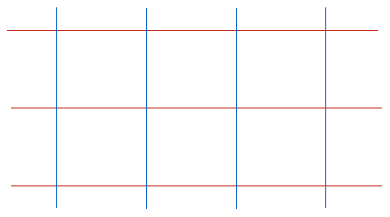
Grid container & grid items
给一个元素设置 display: grid 后，该元素就是 grid container 了，同时其直接子元素就是 grid items。
<div class="grid-container">
<div class="grid-item"></div>
<div class="grid-item"></div>
<div class="grid-item"></div>
<div class="grid-item"></div>
</div>
/* grid container */
.grid-container {
display: grid;
}
/* grid items */
.grid-item {}
Grid lines
构成网格系统的线条，就叫 grid lines，如下图：
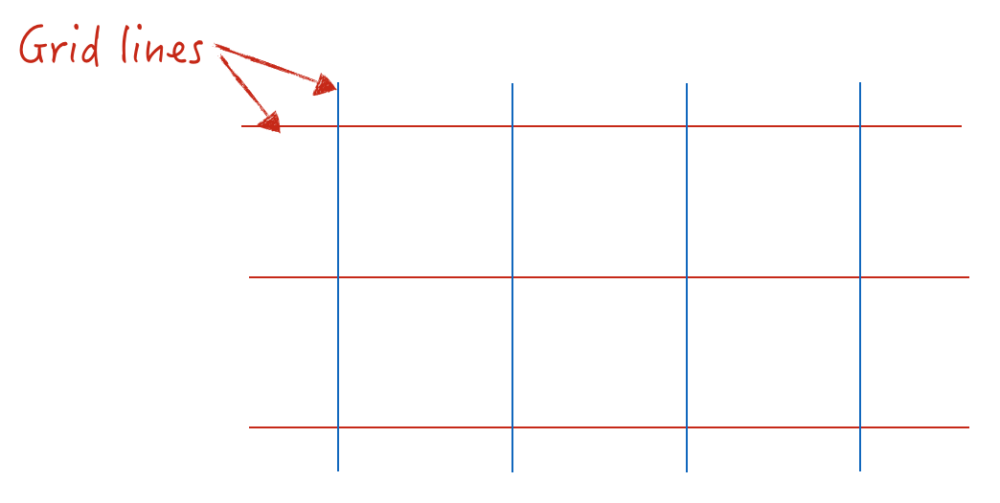
Grid cell
而线条所围成的每一个格子，就叫 grid cell，如下图：
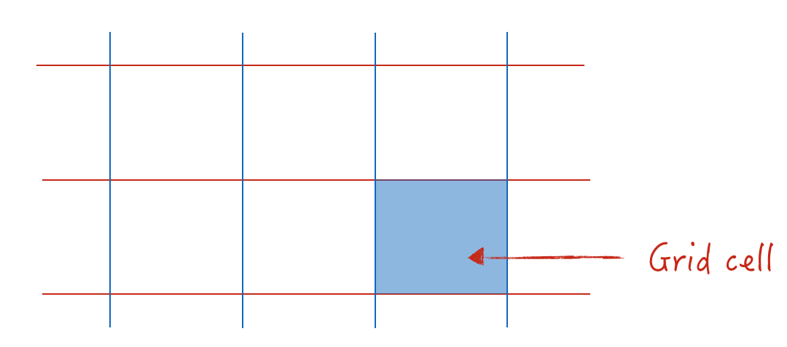
Grid track
整个一行或者一列，就叫 grid track（对应 table 的 row 或 column），如下图：
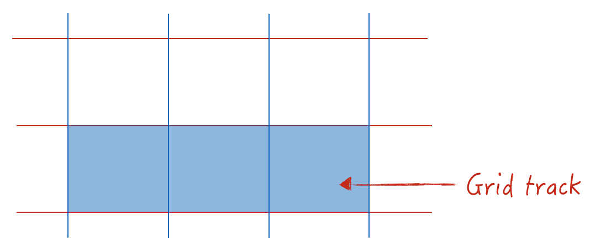
Grid area
由任意两条横向网格线和两条纵向网格线所组成的区域都是 grid area（可以对其命名，以方便使用），其可能由一个或多个 grid cell 组成，如下图：
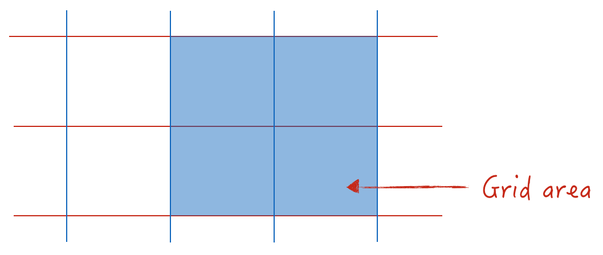
Grid cell vs grid items
最后考虑到有些格子会合并，所以 grid items 可能是单个的 grid cell，也有可能是多个 cell 合并的结果，如下图 3 和 4 item 就是 cell 合并的结果：
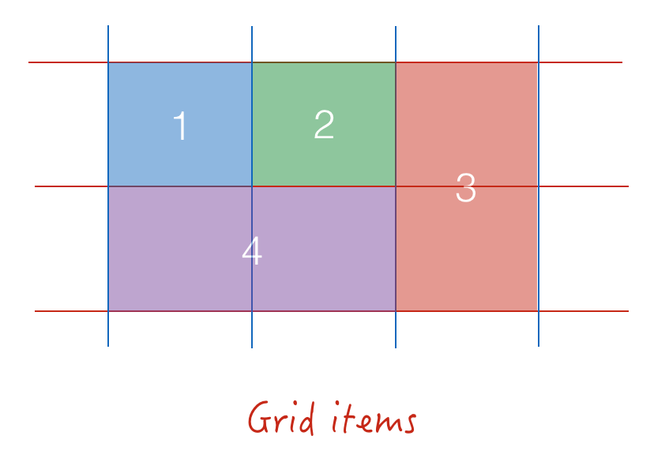 PS：其实网格系统跟我们日常工作中的 excel 有点像，如下图：

实战网格
因为网格系统的属性特别多，功能也非常的强大，所以这里直接选取其最核心的功能及其擅长的使用场景来实战熟悉，如上面我们概述中的效果图：
第一步：搭建结构
先数出 items 的个数，这里为 11 个，如下图：
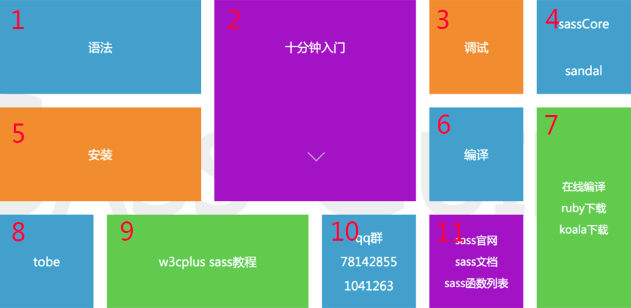
设计 HTML 结构如下：
<div class="grid">
<div class="item">1</div>
<div class="item">2</div>
<div class="item">3</div>
<div class="item">4</div>
<div class="item">5</div>
<div class="item">6</div>
<div class="item">7</div>
<div class="item">8</div>
<div class="item">9</div>
<div class="item">10</div>
<div class="item">11</div>
</div
第二步：设计网格
写好结构后，再根据要实现的效果图拆分格子。如下图，红色和灰色的线条就是 grid lines:
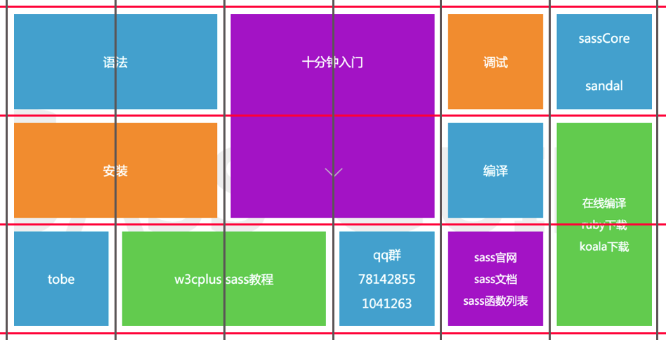
这样我们就得到一个 3 6 的网格，其中 grid cell 的大小为 140px 140px，间距为 20px。现在我们就可以使用 grid container 的 CSS 相关属性完成初步的网格布局，代码如下：
.grid {
display: grid; /* 定义网格布局 */
/* 定义3行6列 */
grid-template-rows: 140px 140px 140px; /* 每个值表示每行的高度 */
grid-template-columns: 140px 140px 140px 140px 140px 140px; /* 每个值表示每列的宽度 */
/* 定义item之间的间距为20px */
grid-gap: 20px;
}
.item{
background: #ccc;
}
grid-template-rows & grid-template-columns
grid-template-rows 用来定义网格的行，每个值代表一行的高度，上面的 3 个 140px 就表示有三行，高度都是 140px。如下，定义四行，每行的高度分别为 140px、300px、200px、400px：
.grid {
/* 定义四行 */
grid-template-rows: 140px 300px 200px 400px;
}
grid-template-columns 同理用来定义网格的列，每个值代表一列的宽度。
其宽高值除了使用我们熟悉的 CSS 单位之外，还新加了一个 fr 单位，表示 grid container 中剩余宽度的一份（和 flexbox 的剩余单位分配差不多）。
.grid {
/* 定义三列
第一列宽度为 200px
第二列宽度为剩余宽度的 80% = 4fr/(4fr + 1fr)
第三列宽度为剩余宽度的 20% = 1fr/(4fr + 1fr)
*/
grid-template-columns: 200px 4fr 1fr;
}
如有多个连续相等的宽或高，还可以使用 grid 中新增的 repeat 函数来表示重复，如上面的 140px 的 3 * 6 网格：
.grid {
grid-template-rows: repeat(3, 140px);
grid-template-columns: repeat(6, 140px);
}
grid-gap
该属性是 grid-column-gap 和 grid-row-gap 的简写，分别表示列之间的间距和行之间的间距，其语法为：grid-gap: <grid-column-gap> <grid-row-gap>。
.grid {
grid-gap: 15px 30px;
}
/* 等同于 */
.grid {
grid-column-gap: 15px;
grid-row-gap: 30px;
}
如只有一个值，则行列间距相等，如 gird-gap: 20px;。
第三步：合并 grid cell
上面实现的效果图如下：
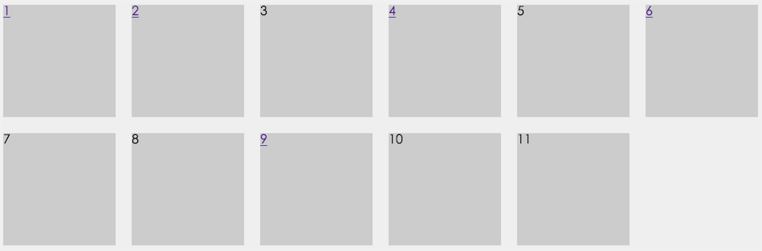
看起来，这跟我们要实现的效果相差甚远，但其实我们只差最后一步：合并 grid cell 。
深入 grid lines
合并 grid cell 的方式很简单，就是使用 grid lines。所以在说合并之前，我们先来深入了解下 grid lines。
其实每个 grid item 都是由四条（两横两竖） grid lines 围起来的格子，在没有合并的情况下 grid item 就是 grid cell，如果要发生合并的话，其实就是重新制定其横竖线条开始和结束的位置。
这里重提下上面的 Grid Lines 概念，如要实现 n行 m列的网格，则需要 n+1 条水平线，m+1 条垂直线。如上面的 23 的网格，需要 3 条红色的水平线（x1、x2、x3）和 4 条垂直的蓝线（y1、y2、y3、y4），如下图：
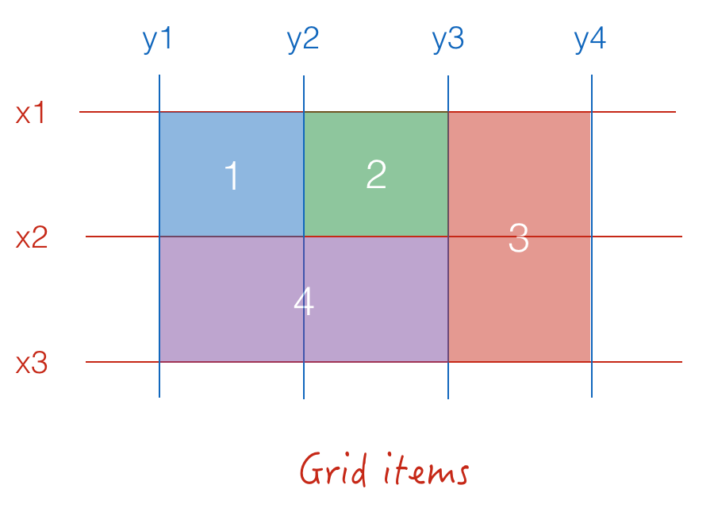
那么四个 grid item 的大小就可以表示如下：
- item1：x1-x2, y1-y2。水平线起始于x1，结束于x2；垂直线起始于y1，结束于y2。
- item2：x1-x2, y2-y3。水平线起始于x1，结束于x2；垂直线起始于y2，结束于y3。
- item3：x1-x3, y3-y4。水平线起始于x1，结束于x3，发生了跨行；垂直线起始于y3，结束于y4。
- item4：x2-x3, y1-y3。水平线起始于x2，结束于x3；垂直线起始于y1，结束于y3，发生跨列。
grid-column & grid-row
grid-column 属性是 grid-column-start 和 grid-column-end 的简写，表示垂直线的起始与结束，其语法为：grid-column: <start-line> / <end-line>；同样 grid-row 属性是 grid-row-start 和 grid-row-end 的简写，表示水平线的起始与结束，其语法为：grid-row: <start-line> / <end-line>。它们都属于 grid items 的属性，用来定义如何合并 grid cell。如上面的 item3 和 item4 我们就可以写成：
.grid-item-3 {
/* 行起始与结束 */
grid-row-start: 1;
grid-row-end: 3;
/* 列起始与结束 */
grid-column-start: 3;
grid-column-end: 4;
}
.grid-item-4 {
/* 简写模式 */
grid-row: 2 / 3;
grid-column: 1 / 3;
}
合并
现在我们已经知道如何合并了，那么先把需要合并的 items 罗列出来，分别是1、2、5、7、9。如下图：
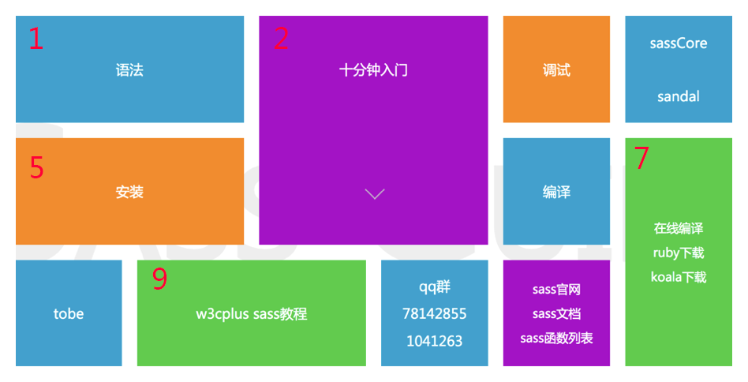
第一个 item 元素单元格占了两列，第一列和第二列，那么其垂直列开始于第一条 line，结束于第三条 line，同样第五个 item 元素也是如此：
.item:nth-child(1),
.item:nth-child(5) {
grid-column: 1 / 3; /* 起始于1，结束于3 */
}
而第二个 item 元素列和行都跨了两个，CSS 代码如下：
.item:nth-child(2) {
grid-column: 3 / 5; /* column起始于3，结束于5 */
grid-row: 1 / 3; /* row起始于1，结束于3 */
}
同样第七个 item 元素行跨了两个，第九个 item 元素列跨了两个，CSS 代码如下：
.item:nth-child(7) {
grid-column: 6;
grid-row: 2 / 4; /* row起始于2，结束于4 */
}
.item:nth-child(9) {
grid-column: 2 / 4; /* column起始于2，结束于4 */
}
最后效果图如下（在线 demo 可移动： gird demo）：
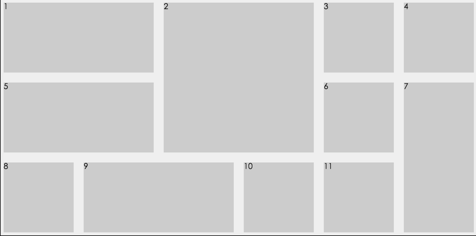
同样这里还有一篇实战可以参考：如何使用 CSS Grid 布局 IOS11 新的控制中心
属性总结
网格系统布局其实跟 flexbox 布局差不多，都是由父子元素构成的布局。所以其属性也分为父元素属性和子元素属性。
上面的实战，我们已经介绍了其核心的一些属性，其余的属性这里只简单罗列下，具体使用可查阅参考资料部分。
父元素（grid container）属性
这里我们将父元素属性大概分为三大类：
第一类：如何去定义一个网格系统，行列及间距等。
- display：grid/inline-grid，定义使用网格系统
- grid-template-columns：定义垂直列
- grid-template-rows：定义水平行
- grid-template-areas：定义区域
- grid-column-gap：定义垂直列与垂直列之间的间距，如上图的A与B之间的间距
- grid-row-gap：定义水平行与水平行之间的间距，如上图的1与2之间的间距
- grid-gap：上面两个列与行间距的缩写
第二类：自动分配形式，当定义的行或列数量不够时，多出 item 的自动排列方式：
- grid-auto-columns：定义多出的 item 的自动column的宽度大小
- grid-auto-rows：定义多出的 item 自动 row 的高度大小
- grid-auto-flow：定义自动 item 是按照先水平方向排列还是垂直方向排列
第三类：分布对齐的方式（属性跟 flexbox 的有点像，所以无需多讲了）。
- justify-items：item 在水平行中的对齐方式
- align-items：item 在垂直列中的对齐方式
- justify-content：整个水平行在 grid 范围的对齐方式，这里有个好用的
space-evenly值，补足了以前flex的space-around和space-between的不足 - align-content：整个垂直列在 grid 范围的对齐方式
子元素（grid items）属性
接下来是我们的 items 属性，同样这里我也将它分为两类：
第一类：定义 grid items 的大小
- grid-column-start：item 的起始列
- grid-column-end：item 的结束列
- grid-column：起始列和结束列的简写
- grid-row-start：item 的起始行
- grid-row-end：item 的结束行
- grid-row：起始行与结束行的简写
- grid-area：item所在区域
第二类：定义 grid items 的自定义对齐方式，这个跟 flexbox 的 flex items 有点相似。
- justify-self：自定义 item 的水平方向对齐方式
- align-self：自定义 item 的垂直方向对齐方式
总结
Grids 布局系统的功能是非常强大的，很多布局都可以用它来搞定，但是建议使用的时候先考虑下其场景是否非常的合适，不要过度使用，把整个布局复杂化了。如用在这个整体布局上，个人感觉就有点复杂化了：grid playground。除此之外，需要注意的是，网格布局是有行和列的概念的，所有不能进行行列划分的都不能使用网格布局系统，如瀑布流只有列没有行，是不可以的。